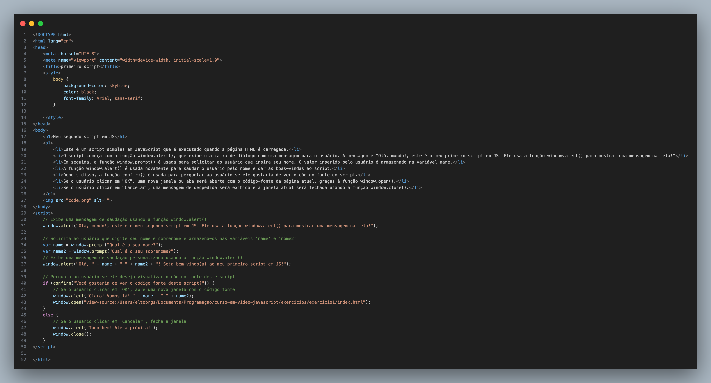

Meu segundo script em JS
- Este é um script simples em JavaScript que é executado quando a página HTML é carregada.
- O script começa com a função window.alert(), que exibe uma caixa de diálogo com uma mensagem para o usuário. A mensagem é "Olá, mundo!, este é o meu primeiro script em JS! Ele usa a função window.alert() para mostrar uma mensagem na tela!"
- Em seguida, a função window.prompt() é usada para solicitar ao usuário que insira seu nome. O valor inserido pelo usuário é armazenado na variável name.
- A função window.alert() é usada novamente para saudar o usuário pelo nome e dar as boas-vindas ao script.
- Depois disso, a função confirm() é usada para perguntar ao usuário se ele gostaria de ver o código-fonte do script.
- Se o usuário clicar em "OK", uma nova janela ou aba será aberta com o código-fonte da página atual, graças à função window.open().
- Se o usuário clicar em "Cancelar", uma mensagem de despedida será exibida e a janela atual será fechada usando a função window.close().
